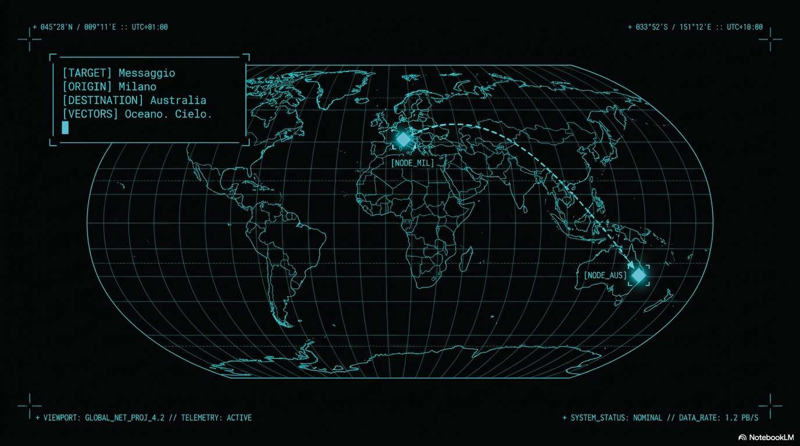

Premi play: il briefing si apre a tutto schermo e le tappe si accendono con la voce. Tocca una miniatura per riascoltare un passaggio.

Cinque schede per capire quello che vedi in sala controllo. Ogni scheda finisce con una prova da fare subito: l'idea diventa azione.
Ogni foto, video o messaggio viene tagliato in pezzetti chiamati pacchetti. Ogni pacchetto porta con sé l'indirizzo di destinazione (l'indirizzo IP) e il numero d'ordine, come una valigia con l'etichetta. A destinazione i pacchetti si rimettono in fila e il file torna intero.
Se un pacchetto si perde per strada? Nessun dramma: il computer se ne accorge e lo chiede di nuovo.
In sala controllo invia un pacchetto con SEND MILANO TOKYO e osserva il puntino: quello è UN pacchetto. Una sola foto ne genera migliaia.
Circa il 99% del traffico tra i continenti viaggia in cavi posati sul fondo del mare, alcuni lunghi più di 10.000 km. Dentro non passano scintille ma luce: impulsi laser dentro fili di vetro sottili come capelli, la fibra ottica.
Il cavo è protetto da strati di acciaio e plastica: in sezione sembra un tronco d'albero con i suoi anelli.
Con PING NEWYORK e poi PING SYDNEY misura i tempi: scrivi sul quaderno i due numeri e spiega la differenza con una frase.
Un satellite geostazionario sta fermo sopra lo stesso punto della Terra, a 36.000 km di altezza. Il segnale deve salire e riscendere: anche alla velocità della luce servono ~240 ms solo per il viaggio. Per questo nei videogiochi online il satellite "si sente": è la latenza.
Ma dove i cavi non arrivano — navi in mezzo all'oceano, montagne isolate — il satellite è l'unica strada.
Prova ROUTE SAT e poi SEND LONDRA NEWYORK. Confronta il tempo con la stessa spedizione in ROUTE CABLE: chi vince, e di quanto?
Il cavo sottomarino arriva sulla costa, la dorsale attraversa il paese… ma a casa tua il segnale arriva grazie all'ultimo miglio: le antenne del quartiere, i ripetitori 4G/5G, il router Wi-Fi in salotto. Il segnale rimbalza di antenna in antenna, ogni salto dura pochi millesimi di secondo.
È il tratto più corto del viaggio, ma anche quello dove il segnale può indebolirsi di più.
Accendi il registro con LOG ON, scegli un utente e segui il suo viaggio con TRACE nome: conta i "salti" che compaiono nel terminale.
A volte migliaia di computer, comandati a distanza, inviano tutti insieme richieste a un solo server per intasarlo: si chiama attacco DDoS. Il server è come un centralino con troppe chiamate: non risponde più a nessuno.
Davanti a un guasto, i tecnici si fanno una sola domanda: dove si è inceppato il meccanismo? E seguono una strategia in quattro mosse: monitorare il traffico, identificare le sorgenti anomale, bloccarle, prevenire con il firewall.
Quando in sala controllo scatta l'allarme, applica le quattro mosse: SCAN → BLOCK ip → FIREWALL ON. Poi scrivi sul quaderno quale mossa ti è sembrata decisiva.
Ricordi la domanda dell'inizio? "Come fa un messaggio ad attraversare l'oceano?" Ora lo sai per averlo visto: si divide in pacchetti, scende nei cavi sotto il mare, e quando serve sale fino ai satelliti.
E ricordi l'attività strana registrata prima della missione? Era l'attacco che hai affrontato: migliaia di richieste tutte insieme per intasare un server. Ti sei chiesto che cosa non stava funzionando, hai trovato il punto in cui il meccanismo si era inceppato e l'hai rimesso in moto. Monitorare, identificare, bloccare, prevenire. Missione chiusa.
Le risposte restano solo su questo schermo: copiale sul quaderno prima di chiudere la pagina.